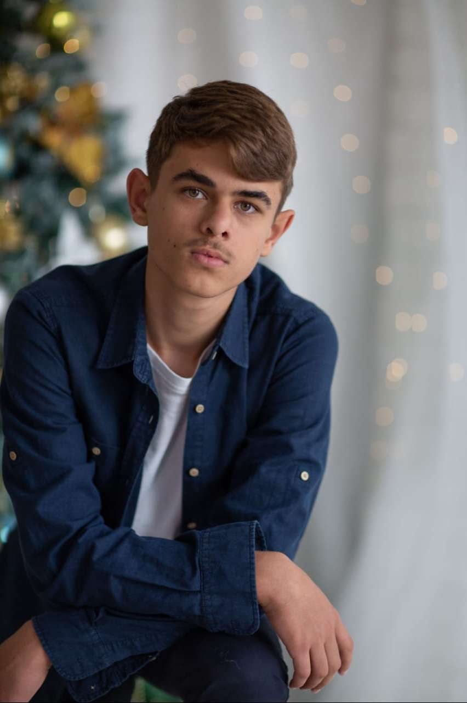

About Me
Student of Computer Science in University of Dundee
Looking for long-term full-time employment to assist me throughout my studies. I completed multiple projects that involved learning new technologies, effective communication, adapting to new environments, and properly delegating tasks. I am looking forward to mastering my skills in the near future. Some of the projects are listed below, with more to come.

Projects
Contact
If you'd like to get in touch, feel free to reach out through any of the links below or send a message.